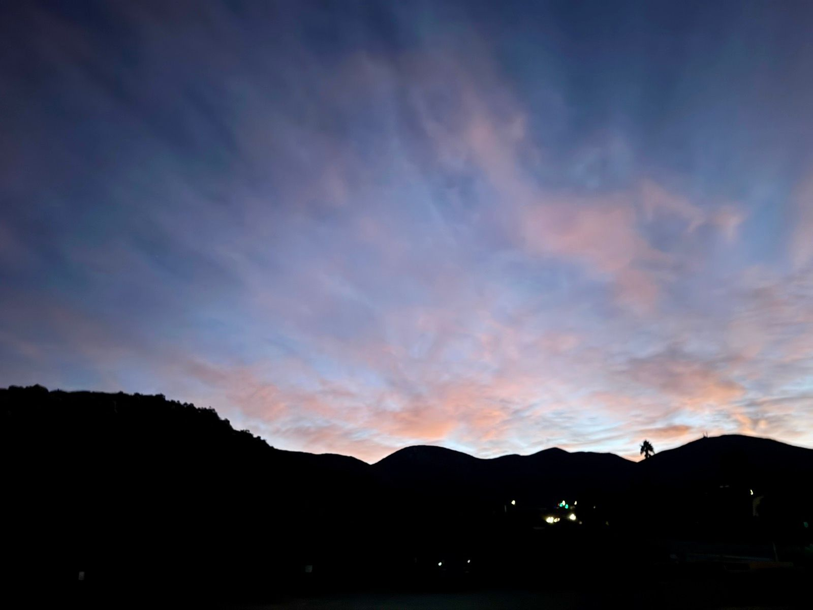
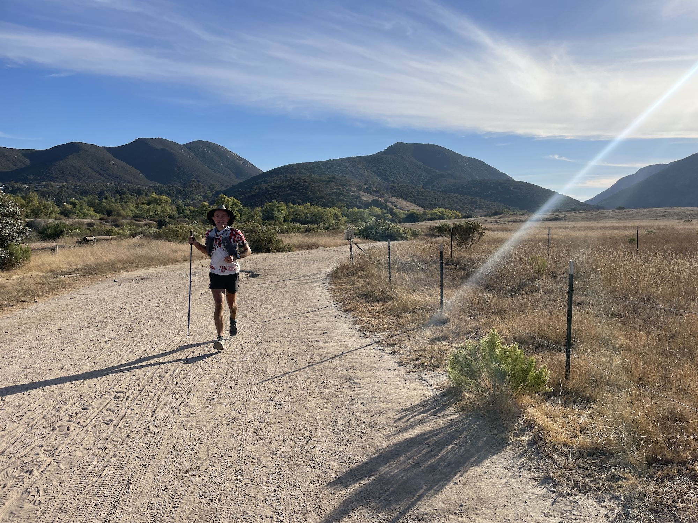
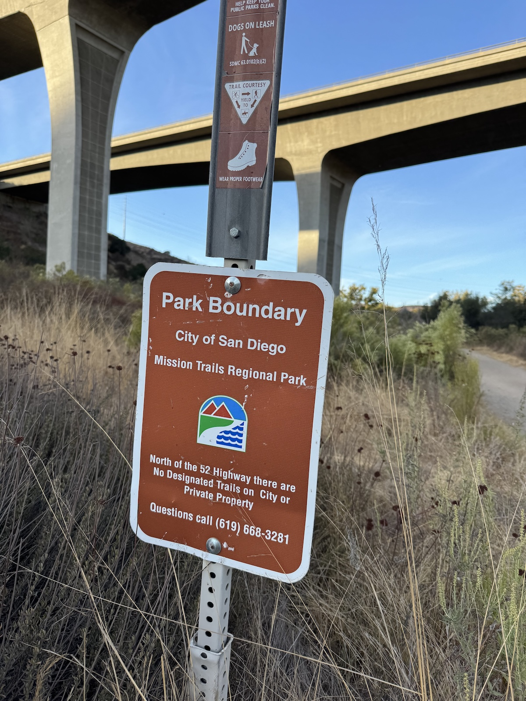

Running all of Mission Trails Regional Park
31 October 2024The ultra racing calendar for 2024 was a bit disappointing. First, the race I had trained for and looked forward to all year—the Ultra Tour Monte Rosa—was canceled with only a day's notice due to bad weather and devastating mud slides. I then set my sights on the Kodiak 100, closer to home, but nature had other plans. The stubborn Line Fire burned through over 40,000 acres of the San Bernardino National Forest, forcing the race director to alter the course into an unrecognizable shadow of itself. I decided to pass.
Sometimes, disappointment breeds inspiration. As I climbed up Cowles Mountain one morning in October, an idea took root: What if, instead of racing someone else's course, I created my own challenge? Something even closer to home, practically in my backyard. What if I ran every single trail in Mission Trails Regional Park?
There is the former Five Peaks Challenge that the park sponsored between 2015 and 2020, encouraging hikers to summit Cowles, Pyles, Kwaay Paay, South Fortuna, and North Fortuna peaks in a single day. As many as 15,000 people have officially been recognized for doing so, going along various routes ranging in length between 18 and 20 miles. I myself have bagged all five countless times in one go. But every trail? That is a bigger undertaking.
Creating a route that covers every trail in the park's network proved to be a puzzle that exceeded my patience for manual course creation in Garmin Connect or Gaia. That's when I realized this was more than a running challenge—it was an opportunity to write some code.
Starting with an Overpass query to fetch all trails and paths within the park boundary (constrained to official trails and paths only), I could transform this task into the Chinese Postman Problem, a classic computer science problem first described by Chinese mathematician Meigu Guan in the 1960s. It seeks to find the shortest possible route that covers every edge (in this case, trail) in a graph, potentially revisiting some edges when necessary. It applies to anyone who cares about efficiency in complete navigation, like mail carriers, garbage collectors, or stir crazy runners during the pandemic, like Rickey Gates, who wanted to run every street in their city (though in Rickey's case not all at once).
Since the park trails are segregated by Mission Gorge Road, I had to manually add the road segments connecting the two trail networks by including their corresponding way ids from OpenStreetMaps. Some trails are also unofficially part of the park but not designated as such on OpenStreetMaps and had to be manually added. On the flip side, some trails had to be excluded since I knew them to be closed but lacked the access=no tag (e.g. Way: 266956319).
To make the route finding more efficient, I added a graph compression step since the Mission Trails dataset has over 5,000 vertices and most edges are long chains that can be collapsed into a single edge with weight equal to the length of the full chain. There is a corresponding expansion step to map the compressed route back onto the original. And because route finding takes time, I added a javascript worker to do the computation in the background to keep the UI responsive.
Finally, running that many miles in a single push requires resources. Since there were only about five times where I could fill up with water from a drinking fountain (sometimes as far apart as 30 miles), I needed outside help. Thankfully, my wife agreed to become my mobile aid station, probably wondering how she went from “in sickness and in health” to “in exhaustion and dehydration.” I created a detailed crew table for her with mile markers and Google Maps links, because nothing says “I love you” quite like a spreadsheet of designated meeting points where she could find me in various stages of fatigue.
---------------------------------
Waypoint Mile Marker
---------------------------------
Crew access 15.85 (25.51 km)
└─ also at: 16.89 (27.18 km)
└─ also at: 24.33 (39.15 km)
└─ also at: 45.96 (73.96 km)
└─ also at: 58.52 (94.19 km)
└─ also at: 61.04 (98.23 km)
└─ also at: 63.51 (102.21 km)
Water 8.76 (14.10 km)
└─ also at: 38.83 (62.49 km)
└─ also at: 41.81 (67.29 km)
└─ also at: 67.60 (108.79 km)
└─ also at: 78.55 (126.41 km)
🏠 0.02 (0.03 km)
└─ also at: 72.22 (116.22 km)
With an optimal route created and loaded onto my Garmin Enduro 3 watch, whose marketing pamphlet reads:
THEY CALL YOU CRAZY. FOR THE 4 A.M. STARTS. FOR THE ENDLESS MILES. FOR PUSHING YOUR BODY TO THE BRINK. BUT YOU KNOW THAT THE REWARD OF FINISHING SOMETHING UNTHINKABLE IS LIKE NOTHING ELSE ON EARTH. PEOPLE MIGHT CALL YOU CRAZY. BUT THAT JUST SPURS YOU ON.I stepped out the front door in the early hours of Saturday morning on October 26, 2024, kissed my wife goodbye, and set out in the dark. The first couple of miles took me along some paved paths in the Kumeyaay Lake Campground before leading into the foothills of Kwaay Paay and back down to Junipero Serra Road. The air was cold in the gorge, and I could see my breath as I jogged the easy miles towards the Visitor Center. I knew the low temperatures would not last, though. The Santa Ana winds would make this late October weekend a toasty one.
I had enlisted the help of my friend, Jésus. He was still recovering from having run the Kodiak 100 but agreed to accompany me for the next 20 miles. We covered many paths on the west side neither of us knew existed as the sky started to brighten.
We then tackled the Climbers' Loop on the north side of Kwaay Paay along some of the steepest and most technical terrain in the park, which was new to Jésus. Dropping back down into the gorge, we crossed the San Diego River where three years ago a tragic accident claimed a young man's life during winter floods. I could not resist lightening the mood by resurfacing a joke a friend had recently cracked about Jésus having no trouble with water crossings. He had only heard that one about 2,024 times before.
From there, we looped around and criss-crossed the top of the quarry before popping out into a neighborhood, where Allison surprised us with some much needed refreshments. She had gone for a morning swim and was not due to meet us until later. I had forgotten to refill with water at Mile 8, and the temperature was rising quickly, so seeing her was a godsend.
Marching on, we covered a few circuitous trails. Jésus often stopped at intersections where another trail met ours, and asked:
“What about this one?”
“Not yet,” I would reply after consulting my watch, feeling increasingly like a slave to the algorithm.
Allison met us again at Mile 24, where Jésus had to say goodbye. I tried to take in extra electrolytes because the next water access was 14 miles away.
I passed someone going up the Suycott Valley Trail and exchanged a few words about the rising heat. At the top of the climb, my watch turned me right back around, and I awkwardly tried to explain myself. The hiker must have thought my brain was melting when I told him I am attempting to cover every trail in the park that day. “That's a long day,” he said, clearly thinking I was making things up.
Around Mile 30, while engrossed in my watch's map screen, trying to make sense of the current out-and-back segment, I tripped over my own shadow and scraped both knees. I cursed myself for not paying more attention to the ground. They stung, but I could not see blood. The wounds were completely caked in dark brown dirt.
From there, the route took me up South Fortuna, where I saw hikers struggling up the steep steps. I tried to rein in my heart rate; there were still many miles until I could rehydrate. Then down the Fortuna Saddle Trail on the east side (affectionately known as the Widowmaker) I went, only to ascend again beneath the power lines, where I dutifully covered every little service road offshoot to the base of each tower. Based on the tracks in the sand, I had been the only person on foot here in recent months.
Around 2:30 in the afternoon, I finally made it to the Mission Dam fountain. I probably drank a liter and a half and refilled my flasks not knowing where the watch would take me next. A text came in from a friend following along on the Garmin Live Track that evaporated all mystery. “Looks like you're headed up Kwaay Paay next! Enjoy!”
Ugh, I thought. That does not sound fun at this time of day. I texted Allison to see if there was any chance she could meet me sooner with some electrolytes and headed up the trail, trying not to get my hopes up.
Ten and a half hours in, and I had only just climbed three peaks. The last two would come much later. Fortunately, Allison heard my plea and brought me a cold Gatorade, which tasted heavenly.
I carried on, the heat subsiding as the sun's angle became more oblique. I thought about Robert who was to meet me at Mile 45 and how selfless and generous of him it was to offer to pace me for the most difficult stretch into the night, despite hardly knowing me. The ultra running community is amazing at fostering a culture of support. For being such an individual sport, it really brings people together.
I managed to run into Allison one more time before picking up Robert. Upon seeing me, Robert handed me a cold plum. “Washed!” He emphasized to my amusement. I savored it as it cooled me down. After some fluid top-offs, we ran off into the sunset. It was around here I discovered that a trail from the course parallel to the equestrian staging road did not exist in real life, shortening the route by almost half a mile. Several other times, short trail segments on the map were either closed or so overgrown that they were impassable, which reduced the overall route by about two miles.
Darkness descended just as we ascended the Widowmaker to complete the remaining segments west of the Fortunas. There were a few odd out-and-backs and awkward loop-the-loops before meeting Allison again on Portobelo Dr at Mile 57. Standing around the trunk refueling, I started to feel cold. The low valley areas in the dark attracted the cool air, and while it was a welcome change to the earlier heat, we could not linger. I kissed Allison and told her I would meet her near the house at Mile 72.
“The way I see it, my role as a pacer is to distract you from the discomforts,” Robert said as he talked for hours about racing, geography, history, biology, anthropology, and everything in between. He was right. Between that and closely following the course on the watch, I had no time to think about fatigue or anything else, and the time flew by.
As we checked off segments, Robert pointed to connecting trails and asked similar questions as Jésus, but this time I could confidently reply with “That's done!” and “Did it!” We climbed over the saddle one last time, 65 miles in and headed back to the campground, where I had started 17 hours ago. I washed my hands with soap in the restrooms, which felt like the height of luxury. I have never run a 100 mile race with the option to do that.
Back on our street, Allison brought us a final round of refreshments. She was wearing her knitted octopus hat to combat the chilled air.
“You are a lucky man,” Robert said. I could not agree more as I handed him a donut bar from the goodie bag.
This was it. The final stretch south of the gorge. My bread and butter trails: up, down, and around Cowles and Pyles peaks. We did not see anyone, even on the main Cowles Mountain Trail, which is normally heavily trafficked, night and day. It was now the wee hours of Sunday morning.
The air was clear, and we could see the twinkling lights of Downtown, La Jolla, and many East County suburbs. They are all in bed, while we are up here working on my silly project, I thought.
“Final stretch!” A message came from David on the Live Tracker. I smiled. I guess not everyone is in bed yet.
“You are still moving well,” Robert said a couple of times on the downhills, which I appreciated because my toes were starting to feel bothered by all the dirt that had accumulated inside my shoes and socks.
As Robert and I approached the trailhead, a headlamp bobbed towards us. I glanced at my watch. 3:45 am. While our day was finally ending, another adventurer's was just beginning. We did it. We covered every single trail in Mission Trails. Mission accomplished.
The final stats were: 85.46 miles, 17,028 feet of elevation gain in 22h 40m 53s.
Interested in doing something similar in your own backyard? Try out the routing tool.
You can view the route on Garmin Connect or Trace de Trail.